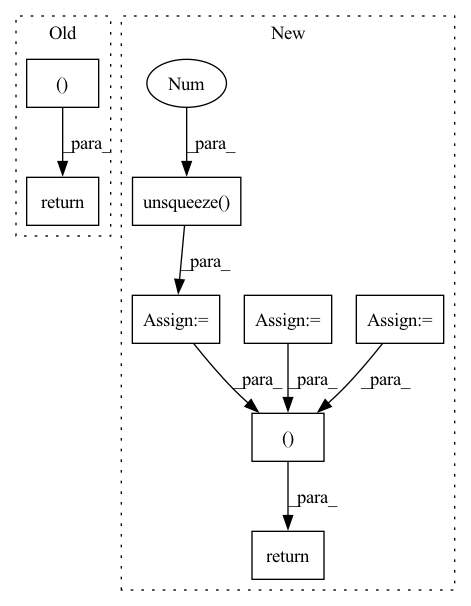

Pattern ID :22315
Before Change
ciou_term = d + alpha * ar_loss;
//print(iou,iou-giou_term)
//print(c,u)
return iou-ciou_term,iou
def box_giou(self,box1,box2):
box_c = self.box_c(box1,box2)
c = self.get_area(box_c)After Change
box_c = torch.cat((l,t,r,b))
return box_c.permute(1,0)
def box_ciou(self,box1,box2):
ciou = torch.zeros(0,1).to(device)
iou = torch.zeros(0,1).to(device)
//if box2.size(0) == 0 :
// return ciou,iou
box_c = self.box_c(box1,box2)
//print(box_c.shape)
c = self.get_area(box_c).unsqueeze(1 )
iou = find_jaccard_overlap(box1, box2)
w1,h1 = (box1[...,2] - box1[...,0]).unsqueeze(1),(box1[...,3] - box1[...,1]).unsqueeze(1)
w2,h2 = (box2[...,2] - box2[...,0]).unsqueeze(1),(box2[...,3] - box2[...,1]).unsqueeze(1)
x1,y1 = (box1[...,2] + box1[...,0]).unsqueeze(1)/2,(box1[...,1] + box1[...,3]).unsqueeze(1)/2
x2,y2 = (box2[...,2] + box2[...,0]).unsqueeze(1)/2,(box2[...,1] + box2[...,3]).unsqueeze(1)/2
u = (x1 - x2) * (x1 - x2) + (y1 - y2) * (y1 - y2);
//if c==0 :
// ciou_term = iou
//else :
//print(c.shape,u.shape)
d = u/c
//print(d.shape)
ar_gt = w2/h2
ar_pred = w1/h1
ar_loss = 4 / (math.pi * math.pi) * (torch.atan(ar_gt) - torch.atan(ar_pred)) * (torch.atan(ar_gt) - torch.atan(ar_pred));
alpha = ar_loss / (1 - iou + ar_loss + 0.000001);
ciou_term = d + alpha * ar_loss;
//print(ar_gt.shape,ar_pred.shape,ar_loss.shape,alpha.shape,torch.atan(ar_pred).shape)
mask = (c == 0)
ciou_term = ciou_term * (~mask) + iou*mask
//print(ciou_term.shape,ciou.shape,iou.shape,box1.shape,box2.shape)
ciou = torch.cat((ciou,ciou_term ))
//print(iou,iou-giou_term)
//print(c,u)
return iou-ciou,iou
def box_giou(self,box1,box2):
box_c = self.box_c(box1,box2)In pattern: SUPERPATTERN
Frequency: 5
Non-data size: 8
Instances Fragment ID: 70412208
Project Name: eric612/mobilenet-yolo-pytorch
Commit Name: e67c6aa8fb3ddaeb1e81326e842beec4f025c300
Time: 2021-04-14
Author: eric612kimo@yahoo.com.tw
File Name: models/voc/yolo_loss.py
M Class Name: YOLOLoss
N Class Name: YOLOLoss
M Method Name: box_ciou(3)
N Method Name: box_ciou(3)
M Parent Class: nn.Module
N Parent Class: nn.Module
M File Name: models/voc/yolo_loss.py
N File Name: models/voc/yolo_loss.py
M Start Line: 248
M End Line: 268
N Start Line: 248
N End Line: 283
Before Change
num_protypes = self.num_prototype, margin = self.margin)
con_loss = con_loss.unsqueeze(0) // for multi-gpu setting
return outputs, con_loss
def core(self, it, fc_feats_ph, att_feats_ph, memory, state, mask, query_matrix, cmn_masks, labels=None):
if len(state) == 0:
ys = it.unsqueeze(1)After Change
num_protypes = self.img_num_protype, margin = self.margin)
txt_con_loss = my_con_loss(self.text_protype, num_classes= self.num_cluster,
num_protypes = self.text_num_protype, margin = self.margin)
img_con_loss = img_con_loss.unsqueeze(0 ) // for multi-gpu setting
txt_con_loss = txt_con_loss.unsqueeze(0) // for multi-gpu setting
bce_loss = self.bce_loss(self.img_feat_head(torch.mean(att_feats, dim=1)), labels)
return outputs, img_con_loss, txt_con_loss, bce_loss
def core(self, it, fc_feats_ph, att_feats_ph, memory, state, mask, query_matrix, cmn_masks, labels=None):
if len(state) == 0:
ys = it.unsqueeze(1) Fragment ID: 70412304
Project Name: markin-wang/xpronet
Commit Name: e2950ef11d4c64aa7ecf4c2bd81253ba9eb56e6c
Time: 2021-11-25
Author: cserwj@gmail.com
File Name: modules/base_cmn.py
M Class Name: BaseCMN
N Class Name: BaseCMN
M Method Name: _forward(6)
N Method Name: _forward(6)
M Parent Class: AttModel
N Parent Class: AttModel
M File Name: modules/base_cmn.py
N File Name: modules/base_cmn.py
M Start Line: 458
M End Line: 463
N Start Line: 499
N End Line: 508
Before Change
d2jast_vals = [term(pos, derivative=2)
for term in self.jastrow_terms]
return (self.get_combined_values(jast_vals),
self.get_derivative_combined_values(
jast_vals, djast_vals),
self.get_second_derivative_combined_values(jast_vals, djast_vals, d2jast_vals) )
else:
raise ValueError("derivative not understood")After Change
for term in self.jastrow_terms]
// combine the jastrow terms
out_jast = self.get_combined_values(jast_vals)
// combine the second derivative
out_d2jast = self.get_second_derivative_combined_values(
jast_vals, djast_vals, d2jast_vals)
// unsqueeze the jast terms to be compatible with the
// derivative
jast_vals = [j.unsqueeze(-1 ) for j in jast_vals]
// combine the derivative
out_djast = self.get_derivative_combined_values(
jast_vals, djast_vals)
return (out_jast, out_djast, out_d2jast )
else:
raise ValueError("derivative not understood") Fragment ID: 70412214
Project Name: nlesc-jcer/qmctorch
Commit Name: 24d24c37310327cd99e0fb2cac8625b6471b539e
Time: 2021-05-26
Author: nicolas.gm.renaud@gmail.com
File Name: qmctorch/wavefunction/jastrows/jastrow_factor_combined_terms.py
M Class Name: JastrowFactorCombinedTerms
N Class Name: JastrowFactorCombinedTerms
M Method Name: forward(4)
N Method Name: forward(4)
M Parent Class: nn.Module
N Parent Class: nn.Module
M File Name: qmctorch/wavefunction/jastrows/jastrow_factor_combined_terms.py
N File Name: qmctorch/wavefunction/jastrows/jastrow_factor_combined_terms.py
M Start Line: 108
M End Line: 133
N Start Line: 107
N End Line: 150
Before Change
l1_loss = l1_loss.mul(out_weights).masked_select(out_masks).sum()
duration_loss = (duration_loss.mul(duration_weights).masked_select(duration_masks).sum())
return l1_loss, duration_loss
After Change
if after_outs is not None:
l1_loss = l1_loss + self.l1_criterion(after_outs, gold_spectrograms)
duration_loss = self.duration_criterion(predicted_durations, gold_durations)
pitch_loss = self.mse_criterion(predicted_pitch, gold_pitch)
energy_loss = self.mse_criterion(predicted_energy, gold_energy)
// make weighted mask and apply it
out_masks = make_non_pad_mask(spectrogram_lengths).unsqueeze(-1).to(gold_spectrograms.device)
out_masks = torch.nn.functional.pad(out_masks.transpose(1, 2), [0, gold_spectrograms.size(1) - out_masks.size(1), 0, 0, 0, 0], value=False).transpose(1, 2)
out_weights = out_masks.float() / out_masks.sum(dim=1, keepdim=True).float()
out_weights /= gold_spectrograms.size(0) * gold_spectrograms.size(2)
duration_masks = make_non_pad_mask(text_lengths).to(gold_spectrograms.device)
duration_weights = (duration_masks.float() / duration_masks.sum(dim=1, keepdim=True).float())
variance_masks = duration_masks.unsqueeze(-1)
variance_weights = duration_weights.unsqueeze(-1 )
pitch_loss = pitch_loss.mul(variance_weights).masked_select(variance_masks).sum()
energy_loss = (energy_loss.mul(variance_weights).masked_select(variance_masks).sum())
// apply weight
l1_loss = l1_loss.mul(out_weights).masked_select(out_masks).sum()
duration_loss = (duration_loss.mul(duration_weights).masked_select(duration_masks).sum())
pitch_loss = pitch_loss.mul(variance_weights).masked_select(variance_masks).sum()
energy_loss = (energy_loss.mul(variance_weights).masked_select(variance_masks).sum())
return l1_loss, duration_loss, pitch_loss, energy_loss
Fragment ID: 70412219
Project Name: digitalphonetics/ims-toucan
Commit Name: 116b9c3f51fb74738622ec2ce379e42f9e478498
Time: 2023-03-11
Author: lux.florian@gmail.com
File Name: TrainingInterfaces/Text_to_Spectrogram/ToucanTTS/ToucanTTSLoss.py
M Class Name: ToucanTTSLoss
N Class Name: ToucanTTSLoss
M Method Name: forward(12)
N Method Name: forward(8)
M Parent Class: torch.nn.Module
N Parent Class: torch.nn.Module
M File Name: TrainingInterfaces/Text_to_Spectrogram/ToucanTTS/ToucanTTSLoss.py
N File Name: TrainingInterfaces/Text_to_Spectrogram/ToucanTTS/ToucanTTSLoss.py
M Start Line: 50
M End Line: 53
N Start Line: 20
N End Line: 66
Before Change
// for pymaf
img = img_np.astype(np.float32) / 255.
img = torch.from_numpy(img).permute(2, 0, 1)
img_norm = image_to_pymaf_tensor(img.clone())[None]
return img_tensor, img_norm, img_np
def process_image_naive(img_file, input_res=512):
Read image, do preprocessing and possibly crop it according to the bounding box.After Change
// for hps
img_hps = img_np.astype(np.float32) / 255.
img_hps = torch.from_numpy(img_hps).permute(2, 0, 1)
img_hps = image_to_pymaf_tensor(img_hps).unsqueeze(0 )
// uncrop params
uncrop_param = {"center": center,
"scale": scale,
"ori_shape": img_ori.shape,
"box_shape": img_np.shape,
"crop_shape": img_for_crop.shape,
"M": M}
return img_tensor, img_hps, img_ori, img_mask, uncrop_param
def get_transform(center, scale, res):
Generate transformation matrix. Fragment ID: 70412270
Project Name: yuliangxiu/icon
Commit Name: 0198e25265de836a9b0c79b017afa7fb5edcb56a
Time: 2022-02-13
Author: yuliang.xiu@tuebingen.mpg.de
File Name: lib/pymaf/utils/imutils.py
M Class Name: AnonimousClass
N Class Name: AnonimousClass
M Method Name: process_image(3)
N Method Name: process_image(3)
M Parent Class:
N Parent Class:
M File Name: lib/pymaf/utils/imutils.py
N File Name: lib/pymaf/utils/imutils.py
M Start Line: 54
M End Line: 117
N Start Line: 78
N End Line: 135